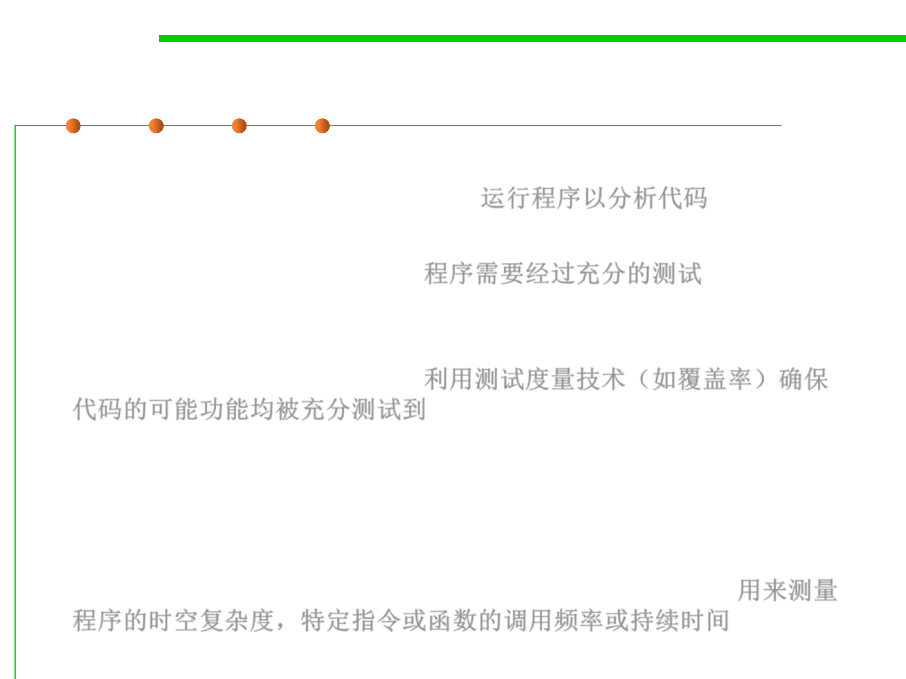

2.2 Process, Systems, and Tools of Software Construction
Dynamic code analysis / profiling
▪ Dynamic program analysis is the analysis of software that is
performed by executing programs. 运行程序以分析代码
▪ The target program must be executed with sufficient test inputs to
produce interesting behavior. 程序需要经过充分的测试
▪ Use of software testing measures such as code coverage helps
ensure that an adequate slice of the program‘s set of possible
behaviors has been observed. 利用测试度量技术（如覆盖率）确保
代码的可能功能均被充分测试到
▪ Profiling (“program profiling”, “software profiling”) is a form of
dynamic program analysis that measures the space (memory) or
time complexity of a program, the usage of particular instructions,
or the frequency and duration of function calls. Profiling 用来测量
程序的时空复杂度，特定指令或函数的调用频率或持续时间